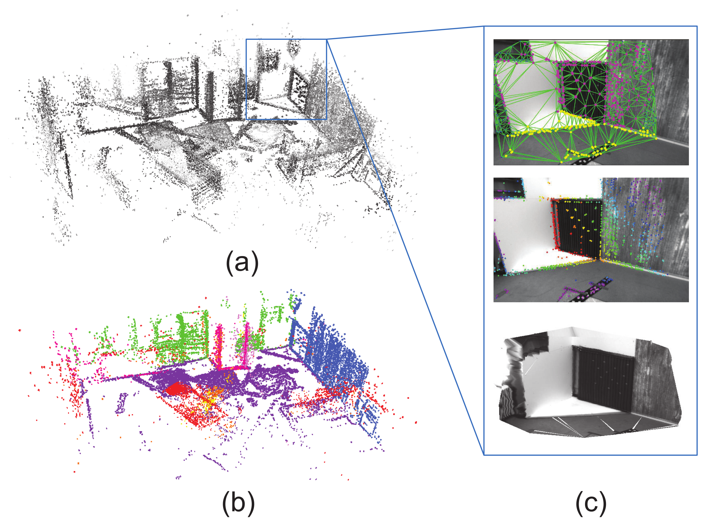
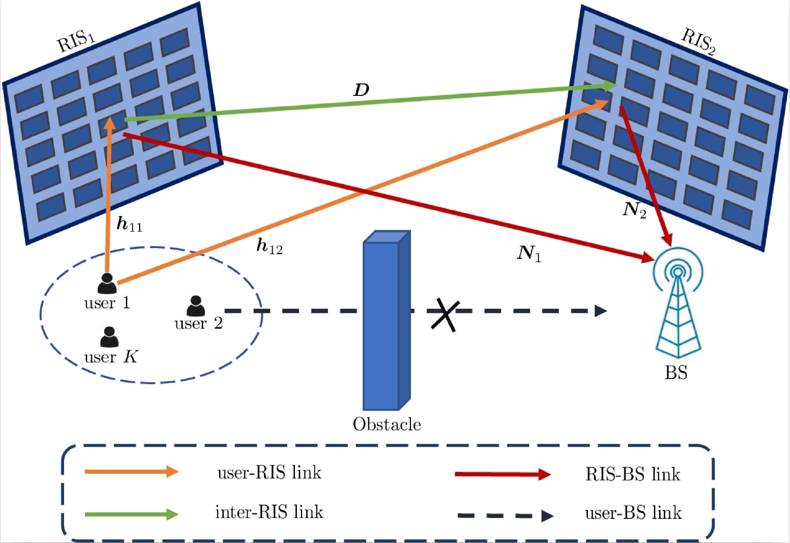

|
I am now a Research Assistant at Nanyang Technological University (NTU), Singapore under the supervision of Prof. Chau Yuen. I obtained a Master's degree in Electronics and Communication Engineering at Peking University, and a Bachelor's degree in Measurement and Control Technology and Instruments at Northeastern University(CN). Email / CV / GitHub / Google Scholar / Twitter |

|
Research Interest: SLAM, 3D Reconstruction, and Scene Understanding.
(* equal contribution)
|  |
Bo Xu, Xin Li, Jingrong Wang, Chau Yuen, Jiancheng Li IEEE Robotics and Automation Letters (RA-L), 2020 PDF / arXiv / code / video |
|  |
Mengbing Liu, Xin Li, Boyu Ning, Chongwen Huang, Sumei Sun, Chau Yuen IEEE Wireless Communications Letters, 2022 arXiv |

|
Xin Li*, Yanyan Li*, Evin Pinar Örnek, Jinlong Lin and Federico Tombari IEEE Robotics and Automation Letters (RA-L), 2020 PDF / arXiv / code / vio code |

|
Xin Li*, Yijia He*, Jinlong Lin, Xiao Liu IEEE/RSJ international conference on intelligent robots and systems (IROS), 2020 PDF / arXiv / video / code |
|
|